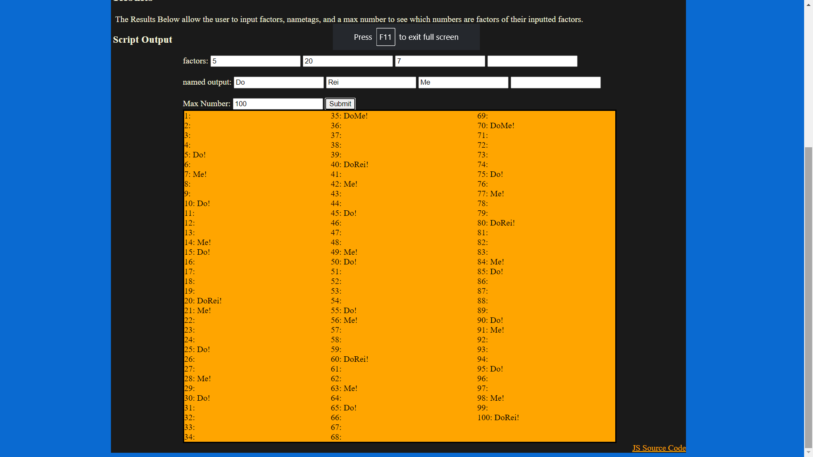

The Challenge for this lab was to debug any old lab code so we could resubmit our old broken labs. My partner and I did not have any errors in our previous labs, so we decided to go back and add things to our labs. For me, I will be finishing the final bonus task for lab 13 where I must convert my factors into an array.
I only had some brief formatting problems, I forgot to replace all the instances of a variable name that I changed. Other than that, I had no other errors.
Below is a picture of the code I added to my lab 13 to fulfil the last bonus task. The code turns the entered factors and nametags into array values.
And here is a screenshot of the working output
